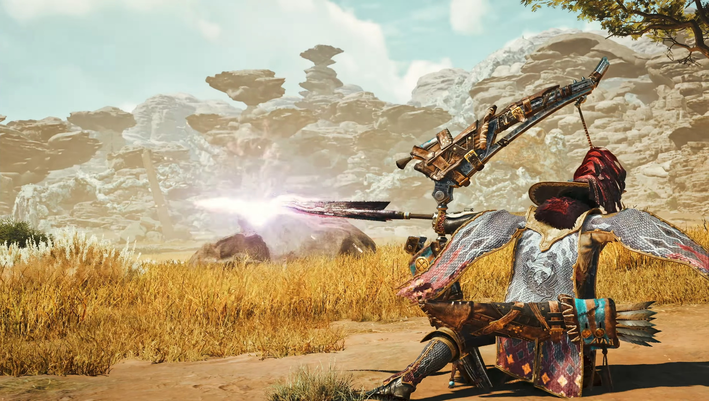
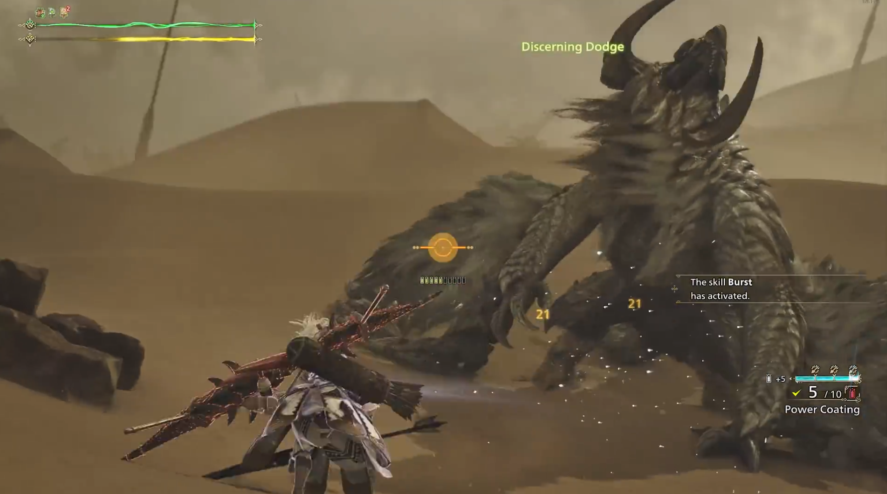
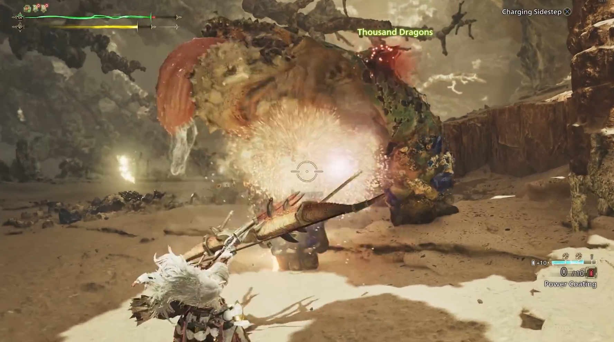
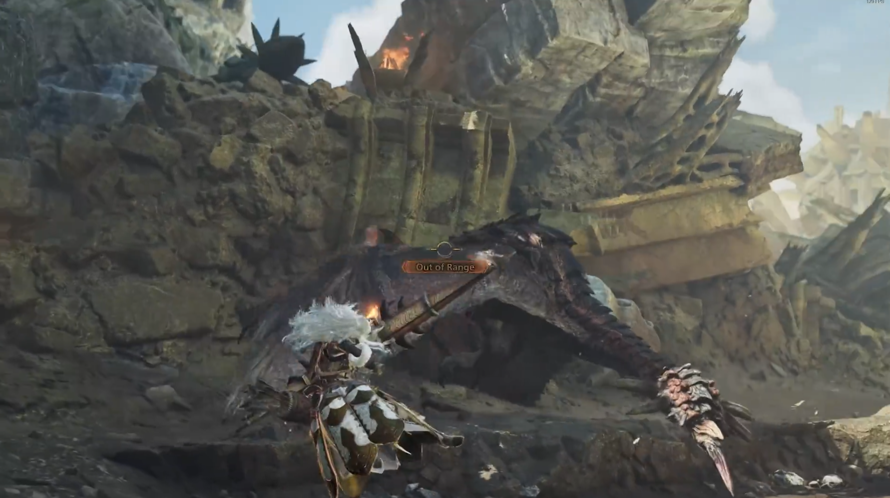

Field Manual · Ranged Arms
Bow Playstyles
Four Ways to Loose an Arrow
The Bow is the most (self-proclaimed) flexible and stylish weapon in Monster Hunter Wilds. It rewards constant repositioning, and stamina management over raw combos or button mashing — which means there isn't one "correct" way to play it. Below are the four playstyles we see the most in the field, ranked by how much they ask of you. Pick the one that matches your pace, or steal a bit from each once you've got the fundamentals down.
Playstyle 01
Dash Dancing
★★☆☆☆Dash dancing takes advantage of the bow's unique dodge. Used after shooting in focus mode it becomes a Charging Sidestep (CS). Timed perfectly against an incoming attack it becomes a Discerning Dodge (DD) — restoring stamina and granting two charge levels instantly. Near 100% uptime; any monster becomes a pincushion while you remain untouchable.


Playstyle 02
Dragonpiercer Sniping
★★★★☆Built around the Dragonpiercer (DP) — a unique piercing move that also deals slicing damage, enabling tail severing. Its effective range far exceeds the bow's normal Critical Range, enabling true long-range sniping. Nerfed in recent patches, but with modern builds and proper skill investment it keeps pace with Dash Dancing.
Playstyle 03
8-Gauge Bow
★★★★★★★★The one off-meta entry — and it fully owns it. Built around hugging the monster and taking FULL advantage of Close-range coatings and DD to deal massive point-blank damage chunks using Thousand Dragons and Power Shots, which are all Spread attacks. Be fully aware that this build, as a primary playstyle, is NOT optimal, but it is VERY funny if you get to slay a monster with the last-hit being Thousand Dragons


Playstyle 04
Hybrid
★★★★★Everything in one. A jack of all trades — but remember the full saying: more oftentimes better than a master of one. Sacrifice some comfort or defensive skills for damage, rely on your own read of DD to consistently dodge attacks, and use everything in the bow's arsenal. The most fun and skill-intensive playstyle bow has to offer.
Bow Playstyle Comparison
| Playstyle | Effective Range | Difficulty |
|---|---|---|
| Dash Dancing | Short–Mid | ★★☆☆☆ |
| Dragonpiercer Sniping | Long | ★★★★☆ |
| 8-Gauge Bow | Short | ★★★★★★★★ |
| Hybrid | All-range | ★★★★★ |